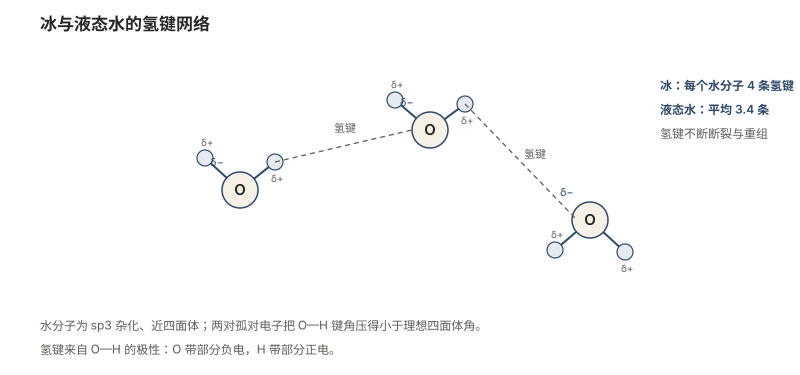

BIO105 · 第 2 章
化学演化起源、水的结构与功能
Chemical Evolution, Water Structure & Function
虚线下划线为术语；悬停查看中文、英文与释义，完整词典见“术语”。
本章目录
本讲讨论两件事：生物分子如何通过化学演化出现，以及水为何能成为生命的通用溶剂。前者从 Miller 实验走到 RNA 世界与 LUCA，后者从 sp3 杂化走到 pH、缓冲、渗透与水通道。
本章要点
- 前生物化学（prebiotic chemistry）可以在无生命条件下生成氨基酸与含氮碱基；HCN 被认为是 RNA 前体的关键。
- RNA 世界假说：RNA 同时承担信息储存与催化功能，核酶（ribozyme）是其核心证据。
- SELEX 是体外演化技术，可从随机序列库中筛出与目标配体特异结合的适配体（aptamer）。
- 最早的生命在还原性大气中依赖无机燃料，FeS 与 H2S 的反应可放出足以驱动 ATP 合成的能量。
- 水分子为 sp3 杂化、近四面体；冰中每个水分子形成 4 条氢键，液态水平均 3.4 条。
- 疏水效应本质是熵驱动：非极性表面附近有序水的释放使体系熵增。
- 纯水的 Kw = 1.0 × 10−14，中性 pH = 7；缓冲液由弱酸与其共轭碱组成。
- 水跨膜需要专门的通道——水通道蛋白 AQP1，其结构由冷冻电镜在 3.8 Å 分辨率下解析。
2.1 生命起源的化学：从火花放电到 HCN
本讲从一个直接的问题开始：生命所需的构件分子（building blocks）从哪里来？讲义的答案是化学演化chemical evolution——在生命出现之前，非生物的化学反应逐步积累了有机分子。
经典证据来自 火花放电装置spark-discharge apparatus。Stanley L. Miller（1930–2007）用这套装置模拟早期地球的还原性大气，在密闭体系内让气体经受电火花作用，结果在产物中检测到氨基酸等有机化合物。这说明有机物的非生物形成（abiotic formation of organic compounds）在化学上是可行的，不需要预设生命存在。
讲义同时给出更新后的假说：氰化氢（HCN）应当是 RNA 的来源。以腺嘌呤（adenine）为例，它是核碱基之一，可以由 HCN 相关的反应路径生成。这条线索把“小分子 → 核苷酸 → RNA”串了起来，也为下一节的 RNA 世界假说做铺垫。
L2 p.4–5
2.2 RNA 世界假说与核酶
1960 年代，研究者注意到 RNA 在结构与功能上的复杂性，提出一个大胆设想：RNA 可能同时充当信息载体与催化剂。这就是RNA 世界假说RNA world hypothesis。它之所以重要，是因为它解决了“先有蛋白质还是先有核酸”的循环依赖——如果一种分子既能储存信息又能催化反应，它就可以独自起步。
支持来自核酶ribozyme。1989 年诺贝尔化学奖授予 Sidney Altman 与 Thomas R. Cech，理由是“发现 RNA 的催化性质”。这一发现证明 RNA 不只是被动的信息分子，它确实能催化化学反应。
结构上，单链 RNA 可以折叠成高度精细的三维结构（single-stranded RNA molecules can fold into highly elaborate structures）。折叠依赖链内的碱基配对与堆积，形成能与底物或配体特异结合的位点。讲义还展示了一个关键的体外实验：随机 DNA 序列转录为随机 RNA 序列，再用二硫键与 Sepharose 珠结合的方式纯化被磷酸化的 RNA，从而筛选出具有磷酸化活性的 RNA。这类结果说明催化活性可以从随机序列库中被“找出来”。
讲义也明确标注了边界：某些具催化能力的 RNA“在自然界中未被发现，只在体外存在”（not found in nature, but in vitro）。这是一个重要的限定——RNA 世界的证据主要来自实验室演化，而不是现存生物。
L2 p.6–13
2.3 SELEX 与从 RNA 到 DNA/蛋白质的过渡
SELEXsystematic evolution of ligands by exponential enrichment（配体指数富集系统演化）又称体外演化（in vitro evolution）。它的产物是能与目标配体特异结合的寡核苷酸，可以是单链 DNA 或 RNA，这类分子称为适配体aptamer。
方法的规模值得注意。讲义给出的数字是随机化 25 个核苷酸，可能的序列数为 425 ≈ 1015。在这个巨大的序列空间里，总能找到少数具备目标结合能力的个体。筛选出的序列再经逆转录酶（reverse transcriptase）转为 DNA 扩增，然后由 RNA 聚合酶重新转录为 RNA，进入下一轮循环。每一轮都富集更强的结合者，这就是“指数富集”的含义。
由此可以回答“蛋白质合成如何演化”。讲义给出的假说是：RNA 在演化上先于 DNA 与蛋白质。在最早期的细胞中，RNA 分子（或其近似物）同时具备遗传、结构与催化三种功能；而在现今细胞中，功能发生了分工——DNA 成为遗传信息的储存库，蛋白质执行绝大多数催化任务。这一分工带来了稳定性与效率的提升，但也意味着细胞必须维持一套复杂的复制、转录与翻译机器。
把 2.1–2.3 连起来看，逻辑链是：非生物反应生成核苷酸前体（HCN → 腺嘌呤等）→ 随机序列中筛选出能催化与结合的 RNA → RNA 承担双重功能 → 功能分工产生 DNA 与蛋白质。每一步都有实验或假说支撑，但整条链仍有缺口，讲义以“假说”标注，而非已定论。
L2 p.12–14
2.4 最早的能量来源：LUCA 与无机燃料
有了分子，还需要能量。讲义提出的问题是：在氧气尚未出现于地球之前，生命如何获得能量？答案是无机燃料。最早期的细胞出现在还原性大气中（当时没有氧气），很可能从早期地球上丰富的无机物获取能量，例如硫化亚铁（FeS）与硫化氢（H2S）。
讲义指出，这个反应放出足够的能量，可以驱动 ATP 的合成。它是一个放能过程exergonic process——产物（黄铁矿 FeS2 与氢气）的自由能低于反应物，差额可用于做功。这为“化学能先于光合作用”提供了化学基础。
反应发生的地点很可能是热液喷口hydrothermal vent，讲义以“黑烟囱”（black smokers）为例：喷口释放高温、富含矿物质的水，遇到冷海水后，黑色的金属硫化物沉淀出来。喷口周围同时具备还原性物质、金属离子与热梯度，是一个天然的反应器。讲义的时间轴标出 45 亿、35 亿、25 亿、15 亿与 5 亿年几个节点，其中大氧化事件Great Oxidation Event发生在约 24 亿年前；单位 Ga = 109 年。第 6 章还会指出，蓝细菌约在 25 亿年前出现在地球上。
讲义用五条陈述概括 LUCAlast universal common ancestor（最后通用共同祖先）：
- LUCA 不是最早的生命，而是细菌与古菌的共同祖先；
- LUCA 很可能是厌氧、嗜热的自养生物；
- 它通过 Wood–Ljungdahl 途径利用 H2 与 CO2；
- Fe–S 簇与过渡金属是其代谢的核心；
- LUCA 很可能生活在热液环境中，并高度依赖地球化学过程。
L2 p.15–18
2.5 水分子的结构：sp3 杂化与氢键
讲义先给出一个理论上的提醒：价键理论无法解释三维原子结构。Lewis 结构式能画清成键与孤对电子，却不能说明为什么 CH4 是四面体、H2O 是弯曲的。引入杂化hybridization后问题解决：碳的 2s 与三个 2p 组合成四个等价的 sp3 杂化轨道sp3 hybrid orbital，指向四面体的四个顶点。
水分子同样使用 sp3 杂化。氧有两对孤对电子占据两个 sp3 轨道（non-bonding sp3 orbital），另两个 sp3 轨道与氢的 1s 成键（bonding sp3 orbital）。四个轨道的排布接近四面体（nearly tetrahedral），但两对孤对电子占据两个轨道，把两个 O—H 键压得比理想四面体角更小——这是水分子弯曲并具有极性的几何来源。讲义以 CH4、NH3、H2O 三者并列，展示孤对电子数目从 0 到 1 到 2 时键角的逐步收缩。
弯曲且极性的几何带来氢键。讲义给出一个精确的对比：在冰中，每个水分子形成 4 条氢键；在液态水中，每个水分子平均形成 3.4 条氢键。液态水中氢键网络不断断裂与重组，平均不足 4 条。这个看似微小的差别，是水在生命体系中独特物理性质的来源。


绘图提示词
Clean vector scientific diagram in two panels: left panel shows ice with each water molecule tetrahedrally bonded to four neighbours forming an open hexagonal lattice; right panel shows liquid water with a disordered network where each molecule has on average 3.4 hydrogen bonds, some bonds drawn as dashed lines breaking and reforming. Flat 2D, thin 1.5 px strokes, muted slate blue and warm grey palette, white background, English labels, no cartoon, no gradient, no shadow.
氢键的另一个作用是溶剂化极性溶质。水与含氧或含氮的极性基团形成氢键，把溶质包围起来；这就是糖、氨基酸、离子化合物能在水中溶解的分子基础。讲义把这称为水的“通用溶剂”角色，其根本原因正是分子的极性。
L2 p.20–25
2.6 疏水效应、两亲分子与熵
水对所有溶质并非一视同仁。讲义定义了三个词：亲水hydrophilic（希腊语 hydro + philos，爱水）、疏水hydrophobic（phobos，惧水，指脂类等非极性分子）、以及两亲amphipathic（amphis，两者兼有）——同一分子既含亲水头部又含疏水尾部。
一个常见的误解是“疏水作用是一种吸引力”。讲义给出的解释是熵：体系熵（无序度）的增加，才是 NaCl 等盐类易溶于水的原因。离子进入水中后，原本被离子束缚的有序水壳被释放，水分子的排列方式数目增加，熵增驱动溶解。对非极性分子也是如此：它们并不被水“排斥”，而是水为了避免在非极性表面形成有序笼状结构，倾向于把非极性分子聚在一起，从而最小化有序水（ordered H2O is minimized）。
两亲分子在水中的自组装是这一原理的直接体现。讲义列出三种聚集体：
- 胶束（micelle）：脂肪酸的疏水链被隔离在球心，亲水头朝外；
- 双分子层（bilayer）：所有酰基侧链都被保护起来，不与水接触；
- 囊泡（vesicle / liposome）：二维双分子层自我闭合，形成包裹水相腔室的三维中空球。
这三种结构正是生物膜的基础。细胞膜就是磷脂双分子层，其自发形成不需要消耗 ATP——驱动力来自疏水效应带来的熵增。

Clean vector diagram with three labelled panels side by side: a spherical micelle with hydrophobic tails sequestered in the core and hydrophilic heads facing water; a flat bilayer with two leaflets of lipids and tails protected inside; a closed bilayer vesicle enclosing an aqueous cavity. Small water molecules drawn outside each structure. Flat 2D, thin 1.5 px strokes, muted slate blue and warm grey palette, white background, English labels, no cartoon, no gradient, no shadow.
同一原理也解释了酶的催化优势。讲义指出：底物与酶结合时，会释放一部分原本有序排列的水；由此产生的熵增为酶-底物复合物enzyme-substrate complex的形成提供了热力学推动力。换句话说，结合的部分驱动力不是“结合得更紧”，而是“释放了水”。
L2 p.26–30
2.7 水的电离、pH 与缓冲
纯水会微弱电离：H2O ⇌ H⁺ + OH⁻。其平衡常数为
纯水的浓度是 55.5 M，实验测得的 Keq 为 1.8 × 10−16 M（由纯水的电导率确定）。两者相乘得到水的离子积：
在中性条件下 [H⁺] = [OH⁻]，因此 [H⁺] = 10−7 M，于是 pH = −log[H⁺] = 7。这个推导说明 pH 7 不是人为约定，而是 Kw 的必然结果。
活细胞内部的 pH 通常维持在 7 附近。缓冲液buffer是能把溶液中 H⁺ 与 OH⁻ 浓度变化降到最小的物质。大多数缓冲液由弱酸与其共轭碱组成，二者可逆地与 H⁺ 结合与释放，从而“吸收”加入的酸碱。对弱酸 HA 的电离，可推出 Henderson–Hasselbalch 方程Henderson–Hasselbalch equation：
讲义的推导顺序是：先解出 [H⁺]，再对两边取负对数，把 −log[H⁺] 换成 pH、把 −logKa 换成 pKa，最后把 −log([HA]/[A⁻]) 反号，得到上式。三种弱酸的滴定曲线对比说明：在 pKa 附近，曲线最平坦，缓冲能力最强。
实验室测量 pH 依靠 pH 电极pH electrode。电极的关键是一层对 H⁺ 选择性的膜，其电位响应遵循 Nernst 方程，斜率约为 60 mV/pH。这意味着 pH 每变化一个单位，电极电位改变约 60 mV——把化学浓度转换成了可测量的电压。
L2 p.31–36
2.8 渗透压与水通道 AQP1
水虽然是小分子，却不能随意穿过脂双层。讲义用红细胞说明后果：置于低溶质溶液中，水大量内流（high influx of H2O），细胞膨胀直至溶血hemolysis；置于高溶质溶液中，水大量外流（high efflux），细胞皱缩（皱缩crenation）。这说明膜对水的通透性受到精确调控，而调控的分子基础就是水通道。
水通道蛋白aquaporin 1（AQP1）的结构由冷冻电镜解析，讲义完整列出了实验流程：
- 把 AQP1 结晶成二维晶体阵列；
- 晶体在液态乙烷中快速冷冻，转入冷冻电镜；
- 电镜配备液氦冷却样品台，加速电压 300 kV；
- 在低剂量下以约 ×50,000 的名义放大倍率记录电子显微照片。
液氦温度约 4 K（−269 °C），这个温度使样品保持玻璃态冰，避免冰晶破坏结构。最终结构分辨率达到 3.8 Å。
这里有一个必须记住的技术细节：讲义明确指出，论文展示的是静电势图（electrostatic potential map，蓝色网格），不是电子密度图（not electron density map）。两者容易混淆，但在冷冻电镜与晶体学中含义不同。结构模型中还可见两个天冬酰胺（asparagine）残基与水分子，它们参与通道内水的排列。
Clean vector cross-section of an aquaporin channel complex in a lipid bilayer: subunits forming a central pore, a single file of water molecules passing through, and a zoomed inset showing two asparagine side chains hydrogen bonding to a water molecule at the selectivity site. Flat 2D, thin 1.5 px strokes, muted slate blue and warm grey palette, white background, English labels, no cartoon, no gradient, no shadow.
2003 年诺贝尔化学奖授予 Peter Agre，表彰其发现水通道；同年另一半授予 Roderick MacKinnon，表彰离子通道的结构与机制研究。两个奖项并列，恰好说明“通道”这一概念在生物化学中的中心地位：离子与水都必须通过专门的蛋白质孔道，才能跨越疏水的膜。
L2 p.37–46